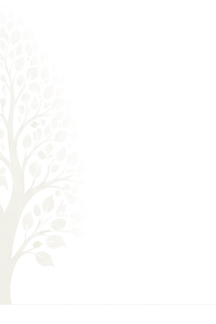

Prezenční kurz v Ostravě
Intenzivní kurz
Pro ty, kdo začínají v lednu a chtějí za čtyři měsíce stihnout vše podstatné s jasným plánem a podporou. Matematika, český jazyk a seberozvoj na jednom místě a v malých skupinách.
- Chcete zjistit, jestli je náš kurz pro vaše dítě ten pravý?
- Chcete poznat lektorky a prostory centra ANTALA?
- Začínáme
- 11. 1. 2027Přihlásit se můžete do 10. 1. 2027.
- Probíhá
- leden – duben 2027Matematika a český jazyk 1× týdně, seberozvoj 1× měsíčně.
- Cena
- 15 300 KčPři přihlášení do 31. 12. 2026 jen 13 700 Kč.
Kurz zahrnuje
Součástí kurzu nejsou jen prezenční lekce. Získáváte také řadu hodnotných služeb a materiálů, které jsme do programu zařadili proto, aby děti měly co nejlepší podmínky pro úspěch u přijímacích zkoušek a abyste i vy, rodiče, zůstali v klidu díky podpůrným workshopům určeným pro vás.
Výuka ve skupině
- 11× matematika60 minut: 45 minut výuky + 15 minut na dotazy
- 11× český jazyk60 minut: 45 minut výuky + 15 minut na dotazy
- 4× seberozvoj120 minut
- Studijní materiály a zpětná vazbaGoogle Classroom po celou dobu kurzu: pracovní listy, doplňující videa, interaktivní pomůcky a průběžné sledování pokroku
-
Rozbor 1. didaktického testumatematika i český jazyk, 12. 4. 2027
Každý rok po prvním termínu přijímacích zkoušek společně projdeme zadání didaktických testů z českého jazyka i matematiky.
Ukážeme si správné postupy řešení, upozorníme na nové typy úloh a vysvětlíme nejčastější chyby, kterých se žáci při testu dopouštějí.
Díky tomu půjdou děti ke druhému termínu lépe připravené, s větší jistotou a mohou získat cenné body navíc. Počítá se totiž lepší výsledek z obou pokusů.
Forma a časy budou upřesněny.
Individuální péče
-
Konzultace silných stránek a Gallup® test1× 60 minut
Co si představit pod talentovými konzultacemi?
K odhalení talentů žáků používáme online testy od společnosti Gallup® jako osvědčenou metodiku v této oblasti. Jedná se o Clifton StrengthsExplorer® pro děti 10–14 let (TOP 3 talenty) a CliftonStrengths® for Students pro budoucí studenty od 15 let (TOP 5 talentů). Žákům 9. tříd standardně nabízíme vyšší variantu testu s 5 pojmenovanými nejsilnějšími talenty.
Návod, jak se k testu dostat, je součástí prvního e-mailu, který od nás dostanete. Test v češtině zabere dítěti přibližně 20–30 minut a obsahuje 200 otázek, které pomohou odhalit a pojmenovat nejsilnější talenty vašeho dítěte. Získaný talentový profil je základem pro navazující konzultaci.
Konzultaci výsledků testu společně realizujeme během jednoho setkání v délce 60 minut, podle domluvy na dálku online (přes MS Teams) nebo osobně ve Vzdělávacím a seberozvojovém centru ANTALA v Ostravě-Porubě.
Než ke konzultaci dojde, je pro rodiče i děti připravený interaktivní workshop jako vstup do problematiky osobního potenciálu a rozvoje silných stránek – zvlášť pro rodiče, pro děti pak jako součást programu kurzu. Vysvětlíme si zde východiska a ukážeme, jak můžete podpořit jedinečný potenciál dítěte v každodenním životě.
Na konzultaci se pak do hloubky podíváme na výsledky celého reportu, propojíme je s aktivitami z workshopu a doplníme o další metody kariérního směřování. Dostanete tipy, jak s talenty nejlépe pracovat a jak je využít.
Zjištěná uvědomění mohou vám i dítěti výrazně pomoct při kariérním směřování a přípravě na další studium.
-
PSYCH-K® sezení1× 60 minut
Co si představit pod PSYCH-K®?
K práci s podvědomými vzorci a limitujícími vnitřními přesvědčeními používáme metodu PSYCH-K®. Tato vědecky podložená metoda je klíčem k odstranění stresu, zlepšení zdraví, budování hojnosti a rozvoji osobního potenciálu.
Jedná se o bezpečný, jednoduchý, velice efektivní a mimořádně účinný způsob práce na úrovni podvědomí. PSYCH-K® využívá propojení mozkových hemisfér a svalové testování pro efektivní komunikaci s podvědomím, abychom mohli dosáhnout změn v našich životech a naše mysl pracovala pro nás, nikoli proti nám.
Co můžete očekávat od PSYCH-K® sezení:
- Délka trvání je plánována na 1 hodinu. V ceně kurzu je 1 individuální sezení s žákem.
- Forma: sezení se uskuteční podle domluvy online (přes MS Teams) nebo osobně ve Vzdělávacím a seberozvojovém centru ANTALA v Ostravě-Porubě.
- Individuální přístup: sezení je přizpůsobeno osobním potřebám a cílům vašeho dítěte. Facilitátorka vás provede procesem identifikace limitujících přesvědčení a případnou transformací vnímání stresové situace.
- Bezpečné prostředí: celý proces probíhá v podporující a respektující atmosféře, kde se můžete oba cítit bezpečně a otevřeně. Vše je na společné domluvě s rodičem i dítětem.
- Rychlé výsledky: již během jednoho sezení můžete pocítit pozitivní změny, ať už jde o snížení stresu, zlepšení sebedůvěry nebo překonání konkrétních výzev a strachu.
-
2× konzultace matematiky30 minut, online
Někdy je potřeba si jen ujasnit učivo z poslední lekce nebo více procvičit slovní úlohy.
Proto jsou součástí kurzu také individuální konzultace, které pomohou dítěti získat větší jistotu tam, kde ji právě potřebuje.
Každý žák může během kurzu využít 2 individuální konzultace z matematiky.
Termín konzultace je potřeba předem domluvit s lektorkou. Zrušení je možné nejpozději 24 hodin předem, jinak konzultace propadá.
-
2× konzultace českého jazyka30 minut, online
Někdy je potřeba si jen ujasnit učivo z poslední lekce nebo více procvičit pravopis.
Proto jsou součástí kurzu také individuální konzultace, které pomohou dítěti získat větší jistotu tam, kde ji právě potřebuje.
Každý žák může během kurzu využít 2 individuální konzultace z českého jazyka.
Termín konzultace je potřeba předem domluvit s lektorkou. Zrušení je možné nejpozději 24 hodin předem, jinak konzultace propadá.
- 8× cvičný test z matematiky a 8× z českého jazykaPodle CERMATu, na doma, řešení najdete v Google Classroomu
Pro rodiče
-
Workshop: Osobní rozvoj dětí90 minut
25. 1. 2027, 17:00–18:30, Vzdělávací a seberozvojové centrum ANTALA, Ostrava-Poruba. Workshopem vás provede Kateřina Kučová, lektorka a talentová konzultantka. Odpovíme si na otázku, proč je nyní tak náročné připravit děti na budoucnost – na co se zaměřit, čeho si všímat a co v dětech rozvíjet, aby se v dnešním turbulentním světě neztratily a vyrostly v sebevědomé mladé lidi, kteří si vždy vědí rady, ale zároveň v sobě mají vypěstovaný zdravý respekt a úctu k ostatním. A jako rodiče jistě najdete přínosy této akce i sami pro sebe, pro uvědomění si svých talentů a své vlastní jedinečnosti.
-
Workshop: Síla vnitřních přesvědčení90 minut
22. 2. 2027, 17:00–18:30, Vzdělávací a seberozvojové centrum ANTALA, Ostrava-Poruba. Workshop s podtitulem „Proč jednáme jako naši rodiče, i když vlastně nechceme" povede Kateřina Kučová, lektorka a talentová konzultantka. Zavede nás do poznatků moderní neurovědy o tom, jak funguje lidské podvědomí, které z 95 % řídí to, jak se chováme, jednáme v různých situacích a jak se rozhodujeme. Ukážeme si na konkrétních příkladech z života, jak nám vnitřní přesvědčení na jednu stranu pomáhají, ale v mnoha situacích nás také velmi limitují – a jak to ovlivňuje i naše děti a jejich reakce na zátěž, stres, strach nebo nové situace. A jak se s tím vším dá v dnešní době pracovat.
-
Webinář: Kolik potřebuju bodůpro děti i rodiče, 30 minut
13. 1. 2027, 18:00–18:30. Na stránkách CERMATu je k dispozici velmi obsáhlá tabulka, ze které lze zjistit kapacity, počty přihlášek a výsledky z minulých školních let na jednotlivých školách. Dále lze zjistit, kolik bodů z matematiky a českého jazyka získali v průměru žáci přijatí na dané školy. Na webináři si ukážeme, kde tabulku najdete a jak s ní pracovat a vyhledat potřebné informace.
-
Webinář: Jak funguje algoritmus pro přijímací zkouškypro děti i rodiče, 30 minut
13. 1. 2027, 17:00–17:30. Je dobré vědět, podle jakého klíče rozděluje CERMAT žáky na jednotlivé školy. Pak se můžete dobře rozhodnout při výběru školy a zejména zvolit jejich správné pořadí.
- E-book: 7 tipů, jak dále pokračovat s rozvojem talentů u dětíJednoduché principy, na kterých můžete stavět a rozvíjet nabyté vědomosti u vašich dětí
Rozvrh kurzu
Zde najdete podrobný časový rozvrh jednotlivých lekcí.
U matematiky a českého jazyka si dítě vybírá jeden termín, který platí po celou dobu kurzu – lekce probíhají 1× TÝDNĚ. Seberozvoj má společná setkání 1× MĚSÍČNĚ.
| Předmět | Na výběr máte tyto termíny | |
|---|---|---|
| Matematika | Pondělí16:50–17:50 | Čtvrtek14:30–15:30 |
| Český jazyk | Pondělí18:00–19:00 | Čtvrtek15:40–16:40 |
| Seberozvoj | Pátek, 1× měsíčně14:45–16:45 | Sobota, 1× měsíčně10:00–12:00 |
Matematika – zobrazit konkrétní termínyPondělky: 11. 1., 18. 1., 25. 1., 1. 2., 8. 2., 22. 2., 1. 3., 8. 3., 15. 3., 22. 3., 5. 4. – vždy 16:50–17:50. Čtvrtky: 14. 1., 21. 1., 28. 1., 4. 2., 11. 2., 25. 2., 4. 3., 11. 3., 18. 3., 1. 4., 8. 4. – vždy 14:30–15:30. Český jazyk – zobrazit konkrétní termínyPondělky: 11. 1., 18. 1., 25. 1., 1. 2., 8. 2., 22. 2., 1. 3., 8. 3., 15. 3., 22. 3., 5. 4. – vždy 18:00–19:00. Čtvrtky: 14. 1., 21. 1., 28. 1., 4. 2., 11. 2., 25. 2., 4. 3., 11. 3., 18. 3., 1. 4., 8. 4. – vždy 15:40–16:40. Seberozvoj – zobrazit konkrétní termínyPátky: 15. 1., 12. 2., 12. 3., 2. 4. – vždy 14:45–16:45. Soboty: 16. 1., 13. 2., 13. 3., 3. 4. – vždy 10:00–12:00. |
||
V kalendáři níže najdete i termíny workshopů pro rodiče a webinářů (po rozkliknutí dne zobrazíte podrobnosti). Cvičné testy mají žáci na doma, řešení najdou v Google Classroomu.
Leden 2027
Ceník kurzu
| Předmět | Počet lekcí | Cena za 60 minut | Celkem |
|---|---|---|---|
| Matematika | 11× 60 minut | 350 Kč | 3 850 Kč |
| Český jazyk | 11× 60 minut | 350 Kč | 3 850 Kč |
| Seberozvoj | 4× 120 minut | 350 Kč | 2 800 Kč |
| Individuální konzultace silných stránek | 1× 60 minut — včetně Gallup® testu | — | 1 900 Kč |
| Individuální PSYCH-K® sezení | 1× 60 minut | — | 1 300 Kč |
| Celkem | 15 300 Kč | ||
| Při přihlášení do 31. 12. 2026 | 13 700 Kč | ||
Platba na splátky
Kurz je možné uhradit najednou, nebo platbu rozložit do 4 splátek bez navýšení: po 3 825 Kč, při přihlášení do 31. 12. 2026 jen po 3 425 Kč.
Od 1. 1. 2027 se cena zvyšuje o 50 Kč za každou hodinu výuky i konzultací.
Přihláška do kurzu
Vyplněním následujícího formuláře závazně přihlašujete své dítě do Intenzivního prezenčního kurzu SEBEVĚDOMĚ K PŘIJÍMAČKÁM v Ostravě-Porubě. Kurz probíhá od 11. 1. 2027 do 12. 4. 2027. Přihlásit se můžete do 10. 1. 2027.
V případě dotazů nás neváhejte kontaktovat na e-mail sebevedomekprijimackam@gmail.com.
14denní garance vrácení peněz. Pokud s kurzem nebudete spokojeni, do 14 dnů od začátku kurzu vám vrátíme peníze za lekce, které do té doby ještě neproběhly.